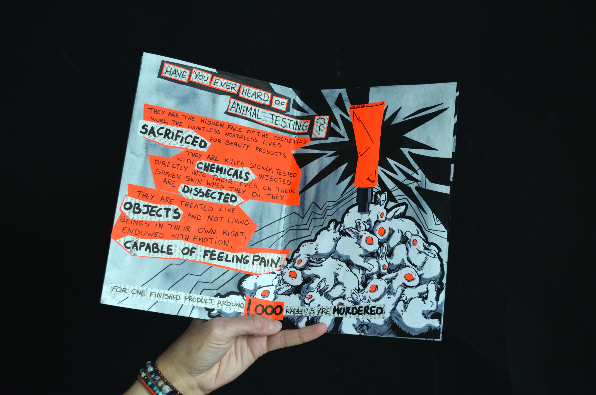

Fanzine pour dénoncer la maltraitance animale avril 2023 Entièrement réalisé à la main à partir de découpage de magazines de mode, de dessins et de papiers colorés. Ce fanzine aux inspirations punk reprend des recherches menées par PETA (@peta), afin de dénoncer la maltraitance animale dans le monde du cosmétique. Les tests sont réalisés sur des lapins, mais aussi des rats et des cochons d'inde. j'ai cependant travaillé uniquement autour de la figure du lapin, pour sa symbolique de l'innocence. Inspiration: "Save Ralph" (2021), court métrage de stop motion de Humane World for Animals